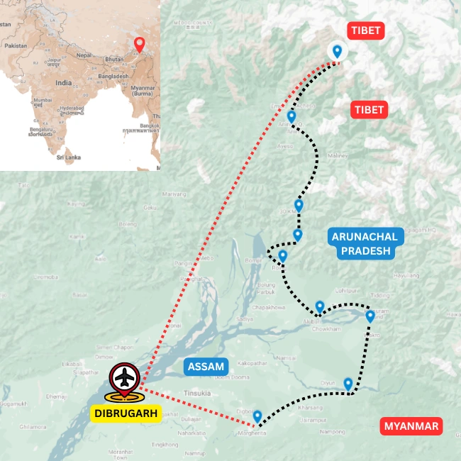

Tours
Cycling · Arunachal Pradesh
Mishmi Hills Cycle Tour in Eastern Arunachal Pradesh
The Mishmi Hills Explorer
Overview
Cycle deep into the Mishmi Hills
The Mishmi Hills Explorer is a moderately challenging cycling journey through one of the most remote and spectacular regions of Arunachal Pradesh. Beginning in the plains of Assam, the route gradually climbs from the Brahmaputra Valley into a dramatic landscape of mountain roads, forested slopes, river valleys and traditional Mishmi settlements.
Long riding days and rewarding climbs lead cyclists deep into a rarely visited corner of Northeast India. Along the way, riders experience the distinctive cultures of the easternmost communities of India and travel through landscapes known for their exceptional biodiversity, wild rivers and dense subtropical forests.
This cycling tour is best suited to experienced and adventurous riders who enjoy demanding terrain, dramatic climbs and the privilege of exploring places that remain far beyond the conventional tourist trail.
Ride Details
Route character

Journey Flow
The tour in sections
This is an indicative flow. The final route is shaped around your dates, pace, group profile and local conditions.
Along the Dehing Patkai
Begin around Upper Assam's rainforest edges, tea country and the Dehing Patkai landscape. This section eases into the ride with humid forests, old routes and the first sense of the eastern frontier.
The Lohit plains
Move into the Lohit plains, where Assam and eastern Arunachal meet through river flats, villages and changing cultural landscapes. The riding opens out before the route turns toward the hills.
The Mishmi hills of Dibang Valley
Climb into the Mishmi Hills of Dibang Valley, where the road becomes more mountainous and remote. This is the heart of the journey: forested slopes, dramatic valleys, long climbs and deep Arunachal character.
Detailed itinerary
Ask for the full route plan and cost
The itineraries are unique, so the detailed route and cost are shared directly after understanding your dates, pace and group size.
Photo Gallery
Moments from the Mishmi Hills
Enquire
Plan Mishmi Hills Cycle Tour in Eastern Arunachal Pradesh
Share a few details and we will get back to you with the best route, duration and cost options.